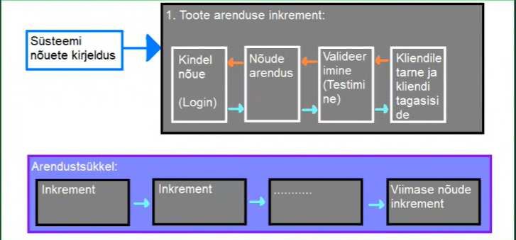

Inkrementaalne arendusmudel on üks viis kuidas lahendada kosemudeli jäika tsüklit. See aitab arendusmeeskonnal
toime tulla muudatustega paremini. Muudatused võivad tulla kas äritegevusest, kliendi soovidest, turu olukorra
muutumisest, tehnoloogiate muutumisest, seaduse muudatustest või siis lõppkasutaja tagasisidest.
Kuna kosemudelis keset arendustööd on muudatustega toimetulek keeruline, on kosemudeli kasutamise puhul
muudatuste sisseviimine üsna kulukas, siinkohal tulebki appi inkrementaalne arendusmudel. Mudel ise on
ajagraafikupõhine ja ei tugine, erinevalt kosemudelist, täielikult valmiskirjeldatud kavandile.
Selles mudelis saab arendada erinevaid programmi osi samaaegselt või erinevatel aegadel. Inkrementaalses arendusmudelis
aitab samaaegset arendustööd teha kindlad tegevused mida kosemudelis ei ole. Nende tegevuste abil on võimalik kliendile
kuvada programmile keskse tähtsusega osi enne kui neid täielikult arendama hakatakse. Tehakse näiteks, kas mingisugune
kasutajaliidese prototüüp või programmeeritakse vähese testimise läbinud MVP (Minimum Viable Product) mis omab
ainult programmi nõuetes kirjeldatud keskset funktsionaalsust. Näiteks:
Ütleme et tegemist on failikonverteriga, siis ei oma ta suurt kasutajaliidese kujundust, ega isegi kõiki formaate
mis lõpp-programm teisendama peab, vaid ainult demonstreerib seda funktsionaalsust käsurea abil, osaliselt. Teisendab
ainult kahte või kolme formaati.
| Head küljed | Halvad küljed |
|---|---|
| Klient saab valminud tooteosa katsetada/kasutada ilma et kogu projekt valmis oleks | Progressi jälgimine on keerukas - arendustöö progressi ei jälgita enam arendatud nõuete järgi vaid arenduskiirus põhiselt - kui palju igas ajavahemikus arendada on võimalik |
| Iga inkrement on arendatav erineva arendusmudeli abil | Projekti struktuur degredeerub iga uue muudatusega, kuna nõuded on muutuvad, ning struktuur ei pruugi muudatuste arvule või muudatuste vajadustele vsatu pidada - tekib spagett. |
| Kulutused on väiksemad - kuna kasutaja nõuded on muutuvad, aga muudatusi saab sisse viia arendustsükli käigus on muudatuste sisseviimise kulutused väiksemad, kui neid teha pärast esmast arendustsükli lõpuleviimist. |
Koodi korrashoi mitteteostamine tõstab hiljem paranduste ja muudatuste sisseviimise kulusid |

Kuna inkrementaalne arendus ja iteratiivne arendus on lihtsalt sarnased sõnad, kipuvad nad inimestel sassi minema,
aga nad siiski tähendavad eri asju: